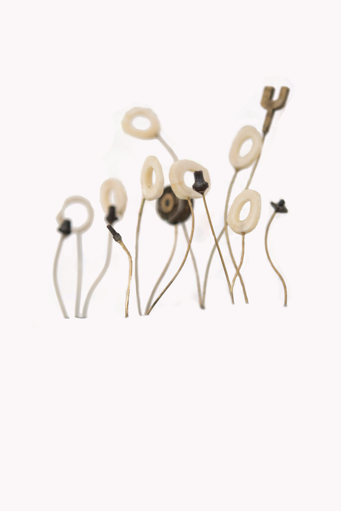
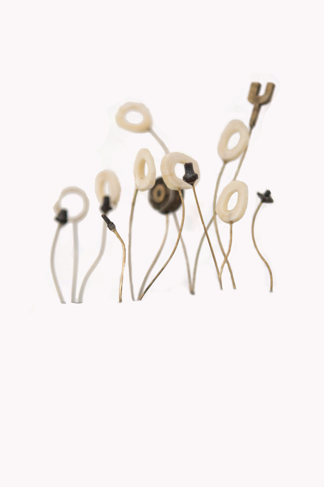

Who are you?
Emma Witter - Visual Artist and Set Designer.
Where do you live?
In Hoxton, North London.
What is your current state of mind?
Keep calm and carry on.
How do you define art?
Currently, as therapy.
What is your favourite quality in a piece of art?
Authenticity
Who is your favourite artist?
Cy Twombly
Instruments
Works by Emma Witter
 

What is your favourite adjective?
Bat Shit
What is your best quality?
I try to be kind.
What is your worst habit?
Avoiding my problems
What is your favourite medium?
Bones .. and other food matter.
What is your favourite meal?
Antipasto misto, veal escalope on spaghetti bolognese and a bottle of the house red, to be shared with my bud Jonah Pontzer at our usual table at our favourite little Italian in East London.
What are you looking forward to?
The above!
These pieces will be on view at the ‘House of Bandits’exhibit by Sarabande: The Lee Alexander McQueen Foundation in Mayfair 5 Vigo Street, starting this Wednesday October 7th.
Bat Shit
What is your best quality?
I try to be kind.
What is your worst habit?
Avoiding my problems
What is your favourite medium?
Bones .. and other food matter.
What is your favourite meal?
Antipasto misto, veal escalope on spaghetti bolognese and a bottle of the house red, to be shared with my bud Jonah Pontzer at our usual table at our favourite little Italian in East London.
What are you looking forward to?
The above!
These pieces will be on view at the ‘House of Bandits’exhibit by Sarabande: The Lee Alexander McQueen Foundation in Mayfair 5 Vigo Street, starting this Wednesday October 7th.